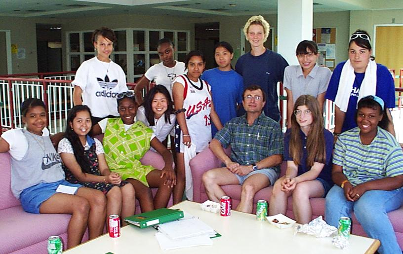

We are currently recruiting new coordinators for the summer of 1998. Applications are available on line or at the Swearer Center for Public Service.
We are currently recruiting new coordinators for the summer of 1998. Applications are available on line or at the Swearer Center for Public Service.
 | |
| The Artemis Project with Prof. Andy van Dam. |
Every student participated in creating one of these three Final Projects: